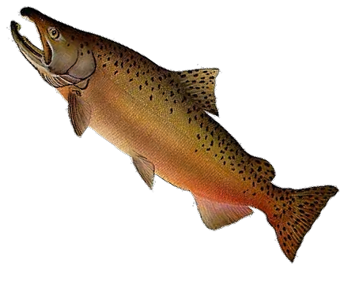

Dioxin and PCB concentrations have been constantly decreasing in Baltic fish for 40 years, and now they are mostly below the EU limits. In addition, the consumption of Baltic herring has been decreasing during the last decades and is now less than a kilogram per year, varying between age groups (older people tend to eat more), genders (males tend to eat more) and countries (Estonians tend to eat more and Danes less than the three other countries studied). People reported that better availability of easy-to-prepare products, interesting recipes, and reduced pollutant levels would increase their consumption of Baltic herring [11]. In contrast, recommendations to reduce consumption on average would have little effect. According to this study, the health benefits of Baltic herring and salmon clearly outweigh health risks in people in age groups over 45 years. The benefits are similar to risks in the most vulnerable subgroup, women of childbearing age. The balance depends on value assumptions: risks prevail if exceeding the tolerable weekly intake as such (especially the new 2018 value) is given weight in the consideration. The analysis was robust in the sense that we did not find factual uncertainties that could significantly change the conclusions and would warrant postponing decisions in the hope of gathering new crucial information. The largest health benefits originates from reduced all-cause mortality, coronary heart disease, breast cancer, and depression, and improved intelligence quotient of the child of a woman who consumes fish. Each of these effects has been linked to either fish in the diet or more specifically to omega-3 fatty acids, implying that a full palette of benefits is not available only from food supplements. The risk of methylmercury to lower a child’s IQ appeared to be as large, or even larger, than all dioxin risks combined (Table (Table4).4). In fact, it is a common misconception that dioxins pose the largest risk if one eats Baltic fish. In addition, the dioxin-related cancer risk was not larger than the risk of developmental effects despite the fact that dioxins are reputed to be potent carcinogens. There seems to be room for an updating of the risk communication about consumption of Baltic fish. This analysis suggests that dioxins are not the largest health risk related to these fish; and that the dioxin-related cancer risk is small in everyday life. The facts that dioxins are very potent per microgram of substance and that they cause cancer in laboratory animals after high doses [1] are irrelevant details in risk communication and instead, they provide a wrong impression of the actual risks to an individual’s health. We found some no-regret policies. Promoting the consumption of small Baltic herring rather than large ones confers all of the health benefits but reduces the individual’s exposure to pollutants. Promoting the consumption of Baltic fish to population subgroups other than young females confers more health than harm. Finally, reducing dioxin emissions into the atmosphere will reduce concentrations not only in fish In conclusion, despite the new evidence and at odds with the new EFSA TWI recommendation, this study indicates that Baltic fish are still a safe and healthy food for most population subgroups in the Nordic countries. A distinct subgroup, namely young women planning to have children, is of special concern. The health benefits in this subgroup are smaller than in the older age groups, and also there are potential but small risks to a child that is exposed during pregnancy and breast feeding. Experts do not agree on conclusions about this subgroup, but the scientific uncertainties actually do not play a large role. In contrast, value judgments are crucial when designing policies related to the dioxin problem of Baltic fish. These questions should be carefully discussed and deliberated by decision makers, experts, citizens, fishermen/women, and other stakeholders.
Patrick's Salmon Cookies Intl.
Open 6am to 8pm daily
Serving the finest pescatarian baked goods and kombucha
Rush international shipping available

Store Locations
Seattle
ph. 206-879-4579
addr. 7650 Chinook Ct, Seattle
Tokyo
ph. +81 03-6587-4336
addr. 5589 Sockeye St, Osaka
Dubai
ph. +971 04-875-4001
addr. 97 Coho Ln, Dubai
Paris
ph. +33 87 40 35 20 15
addr. 220 Atlantic Ave, Paris
Lima
ph. +51 654-150-1229
addr. 3369 Silverbrite St, Peru
Our Mission - Passionate Pescatarianism